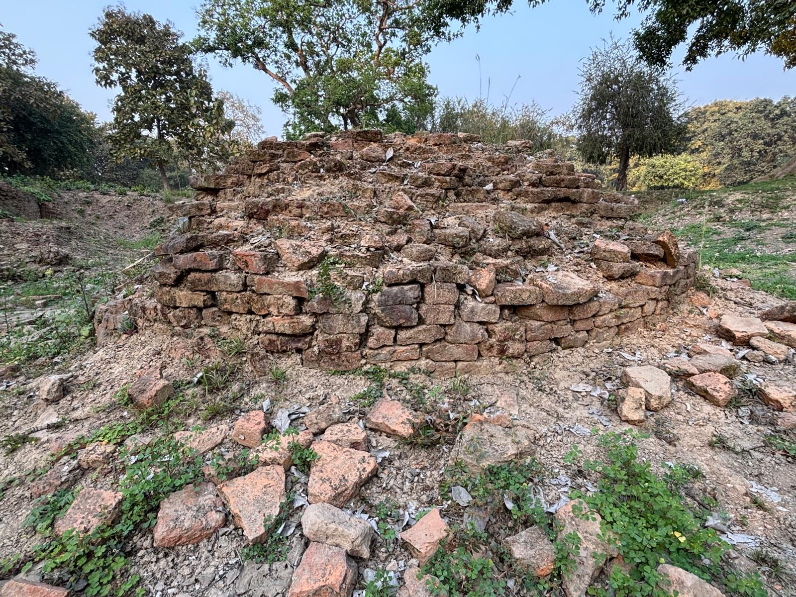
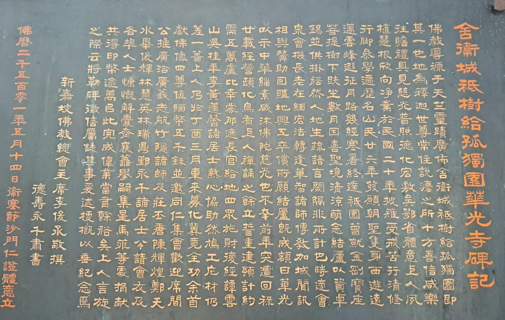

一
歷史背景
華光寺的建立，並不只是興建一座寺院，而是近代中印佛教交流的重要見證。當年仁證法師遠赴佛陀聖地舍衛城，看到華人僧俗前來朝聖時缺乏安住禮佛之所，遂發願建寺。這份願心後來獲得中國佛教界與海外華僑護法支持，使華光寺成為連結佛陀聖地與華人佛教信仰的重要據點。
延伸閱讀｜歷史背景
華光寺
從佛陀聖地的因緣，到仁證法師的發願，再到華光寺的建立與重建
緣起
華光寺所在的舍衛城，是佛陀住世時長期說法的重要聖地。近代以來，仁證法師遠赴印度朝聖，並在聖地中逐步生起為華人僧俗建立道場的願心。從歷史背景、創寺法師到籌建過程，華光寺的形成不只是建築的出現，更是一段願心、護持與重建交織而成的歷史。
三段脈絡
一
華光寺的建立，並不只是興建一座寺院，而是近代中印佛教交流的重要見證。當年仁證法師遠赴佛陀聖地舍衛城，看到華人僧俗前來朝聖時缺乏安住禮佛之所，遂發願建寺。這份願心後來獲得中國佛教界與海外華僑護法支持，使華光寺成為連結佛陀聖地與華人佛教信仰的重要據點。
延伸閱讀｜歷史背景
二
仁證法師早年於湖北出家，受戒後行腳參學，精勤修行。1937 年，他發願西行，遠赴印度佛陀聖地舍衛城，在祇樹給孤獨園修行安住。面對華人朝聖者在聖地缺乏禮佛與棲止之所的情況，法師逐漸生起建寺願心，克服異地語言與環境困難，創建華光寺，使其成為華人僧俗朝禮佛陀聖地的重要依止處。
延伸閱讀｜創寺法師
三
華光寺的建立，並非一蹴可幾，而是歷經發願、購地、初建、焚毀與重建的漫長過程。仁證法師初到舍衛城時，原本只是希望結一茅蓬，自修並供僧人掛單；後來在諸方僧俗協助下購地興工，終於建成寺院。其後寺院曾遭火災焚毀，法師又重新發願，並在新加坡、馬來亞、菲律賓等地善信護持下完成重建，使華光寺成為華人佛教徒在舍衛城的重要道場。
延伸閱讀｜籌建過程歷史意義
華光寺的歷史，不只是某一位法師的個人行誼，也不只是某一座寺院的建築史。它同時見證了佛陀聖地中的華人道場如何形成，也見證了近代中印佛教交流、華人信眾朝聖需求，以及十方護法與海外華僑共同護持所匯聚成的歷史力量。